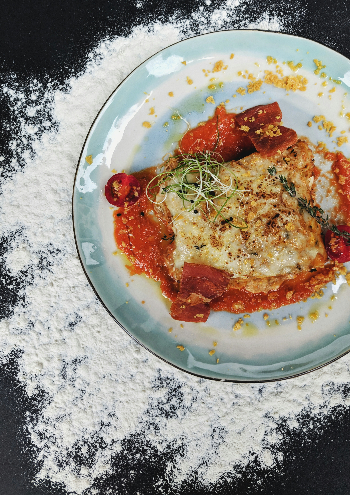

Mom's Secret Lasagna

Description
Making this lasagna recipe a day ahead and refrigerating overnight allows the
spices to meld and gives it exceptional flavor and I am really glad I get to
share this recipe with you all.
Ingredients
- 1 ½ pounds lean ground beef
- 1 onion, chopped
- 2 cloves garlic, minced
- 1(29 ounce) can diced tomatoes
- 2 (6 ounce) cans tomato paste
- 2 tablespoons brown sugar
- 1 tablespoon chopped fresh basil
- 2 ½ teaspoons salt, divided
- 2 large eggs, beaten
- 2 tablespoons dried parsley
- 1 pound mozzarella cheese, shredded
Steps
- Gather all ingredients
- Cook and stir ground beef, onion, and garlic in a large skillet over medium heat
for 5 minutes; drain fat
- Mix in diced tomatoes, tomato paste, brown sugar, basil, 1 1/2 teaspoons salt,
and oregano. Simmer meat sauce, stirring occasionally, for 30 to 45 minutes.
- Preheat the oven to 375 degrees F (190 degrees C)
- Meanwhile, bring a large pot of lightly salted water to a boil. Cook lasagna
noodles in boiling water, stirring occasionally, until tender yet firm to the bite,
about 8 minutes; drain. Lay noodles flat on towels; blot dry.
- Mix together ricotta, 1/2 cup Parmesan cheese, eggs, parsley, and remaining 1
teaspoon salt in a medium bowl.
- Layer 1/3 of the noodles in the bottom of a 9x13-inch baking dish. Cover with 1/2
of the ricotta mixture.
- Cover the ricotta mixture with 1/2 of the mozzarella cheese, and 1/3 of the meat
sauce.
- Repeat. Top with remaining noodles and meat sauce. Sprinkle 2 tablespoons
Parmesan cheese over the top
- Bake in the preheated oven for 30 minutes. Let stand for 10 minutes before
serving.